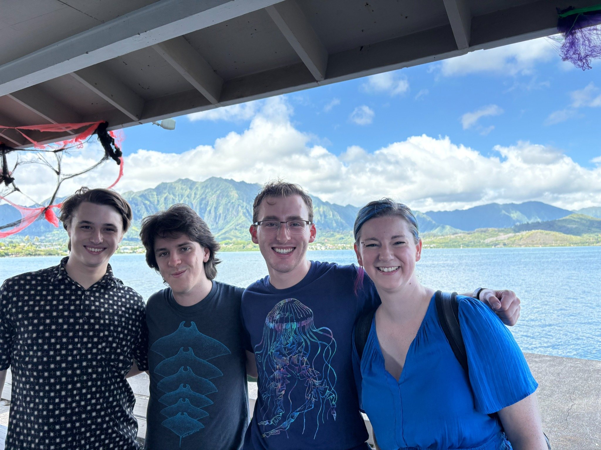
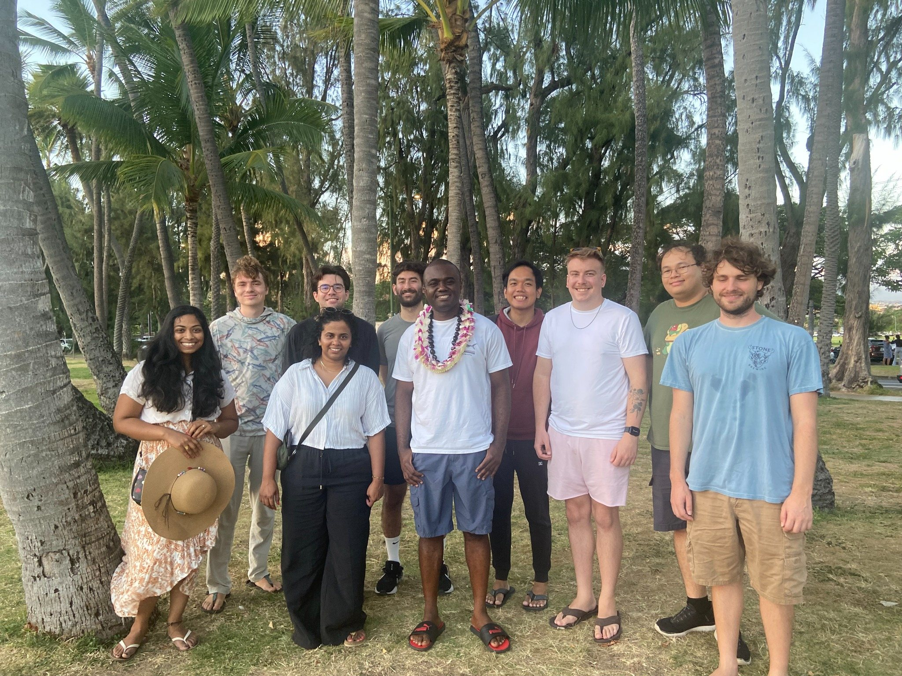

Research is a community practice
My mentoring emphasizes early research engagement, collaborative problem solving, clear communication, and opportunities for students to build networks beyond their home institution.
I have advised PhD students, master’s students, undergraduate projects, and statistical consulting projects. I also help organize research communities and workshops that give students structured entry points into new research areas.
Current and former students
PhD students
Udani Ranasinghe — Ideals of phylogenetic networks.
Ikenna Nometa — Algebraic statistics: Problems in phylogenetics and Wasserstein distance optimization.
Maize Curiel — Algebraic and combinatorial applications in systems and evolutionary biology.
Postdoctoral researchers
Max Hill
Master’s students
Derek Mizumoto — Pseudo-monomial ideals for microbiome data.
Dylan Alvarenga — Algebraic properties of the coalescent model.
Morgan Gauvin — Maximum likelihood thresholds for graphical models.
Ikenna Nometa — Algebraic tools for the analysis of trait evolution.
JoeAnna McDonald — Algebra of neural ideals.
Travis Barton — Invariants-based reconstruction for phylogenetic networks.
Maize Curiel — Operations that preserve steady-state ideals.
Nicole Yamzon — Toric ideals of domino tilings.
Carson Sprock — Non-convexity measures for detecting gerrymandering.
Matthew Litrus — Sampling zero-one tables using sequential importance sampling and graph theory.
Nida Kazi Obatake — Drawing place field diagrams of neural codes using toric ideals.
Undergraduate students
Jasmine Carpena — Fixed maximum likelihood threshold random graph sampling.
Carlos Munoz — When are steady-state ideals monomial.
Rodolfo Garcia and Ha Nguyen — Geometry of exponential random graph models.
Statistical consulting projects advised
Ethan Lamb, partner institution: Ma Ka Hana Ka ʻIke — East Maui Community Food Assessment.

